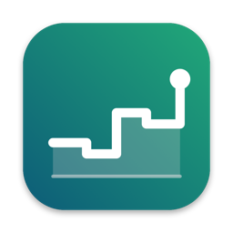

CashlaneDatenschutzerklärung
Stand: 25. Oktober 2026
Verantwortlich
Paul Merker
app@codezenith.com
Kurz gesagt
Cashlane erhebt keine personenbezogenen Daten. Es gibt keinen Server, kein Benutzerkonto, keine Werbung, keine Analyse und kein Tracking. Ich als Entwickler habe keinen Zugriff auf deine Eingaben.
Wo deine Daten liegen
Alles, was du in der App einträgst, also Kontostand, Rechnungen und Kosten, wird auf deinem Gerät gespeichert. Für den Abgleich zwischen deinen Geräten wählst du selbst einen von zwei Wegen.
iCloud ist voreingestellt. Die App legt ihre Daten im iCloud-Speicher deines Apple-Kontos ab, dafür gilt die Datenschutzrichtlinie von Apple.
Alternativ wählst du einen Ordner, zum Beispiel in Dropbox, Google Drive oder OneDrive. Die App schreibt dort eine Datei namens Cashflow.json, für sie gelten die Bestimmungen des jeweiligen Anbieters.
In beiden Fällen läuft die Übertragung direkt zwischen deinem Gerät und deinem eigenen Speicher. Die App schickt nichts an andere Stellen.
Deine Rechte
Da ich keine Daten von dir verarbeite, kann ich auch keine herausgeben oder löschen. Deine Daten löschst du, indem du die App entfernst und, falls genutzt, die Datei im gewählten Ordner oder die App-Daten in den iCloud-Einstellungen löschst. Bei Fragen schreib mir an die Adresse oben. Du hast außerdem das Recht, dich bei einer Datenschutz-Aufsichtsbehörde zu beschweren, in Österreich bei der Datenschutzbehörde.
Privacy Policy
Last updated: 25 October 2026
Responsible
Paul Merker
app@codezenith.com
In short
Cashlane does not collect any personal data. There is no server, no user account, no advertising, no analytics and no tracking. As the developer I have no access to what you enter.
Where your data is stored
Everything you enter in the app, such as your balance, invoices and costs, is stored on your device. To sync between your devices you choose one of two ways.
iCloud is the default. The app stores its data in the iCloud storage of your Apple account, and Apple's privacy policy applies.
Alternatively you choose a folder, for example in Dropbox, Google Drive or OneDrive. The app writes a file called Cashflow.json there, and the terms of that provider apply to it.
In both cases the transfer happens directly between your device and your own storage. The app sends nothing anywhere else.
Your rights
Since I do not process any of your data, I cannot hand it out or delete it. You delete your data by removing the app and, if used, the file in the chosen folder or the app data in your iCloud settings. For questions, write to the address above. You also have the right to lodge a complaint with a data protection authority.